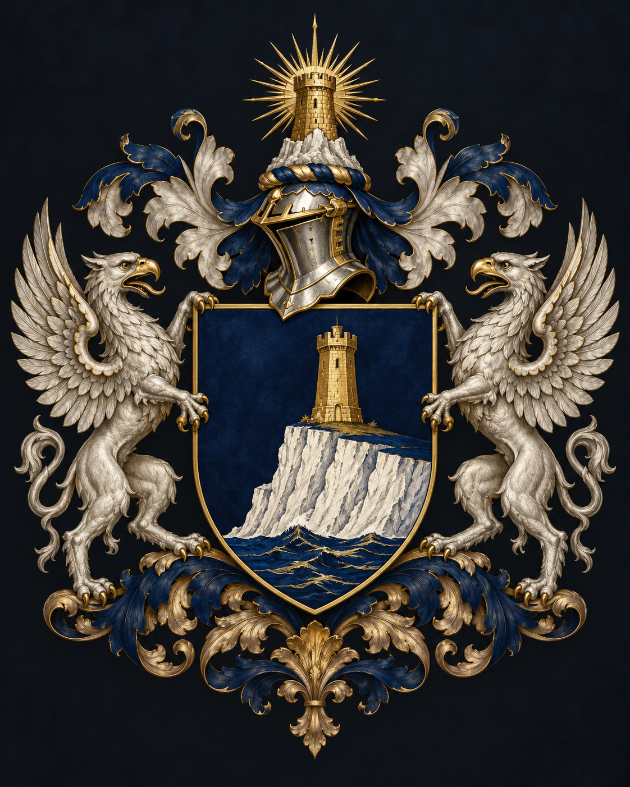
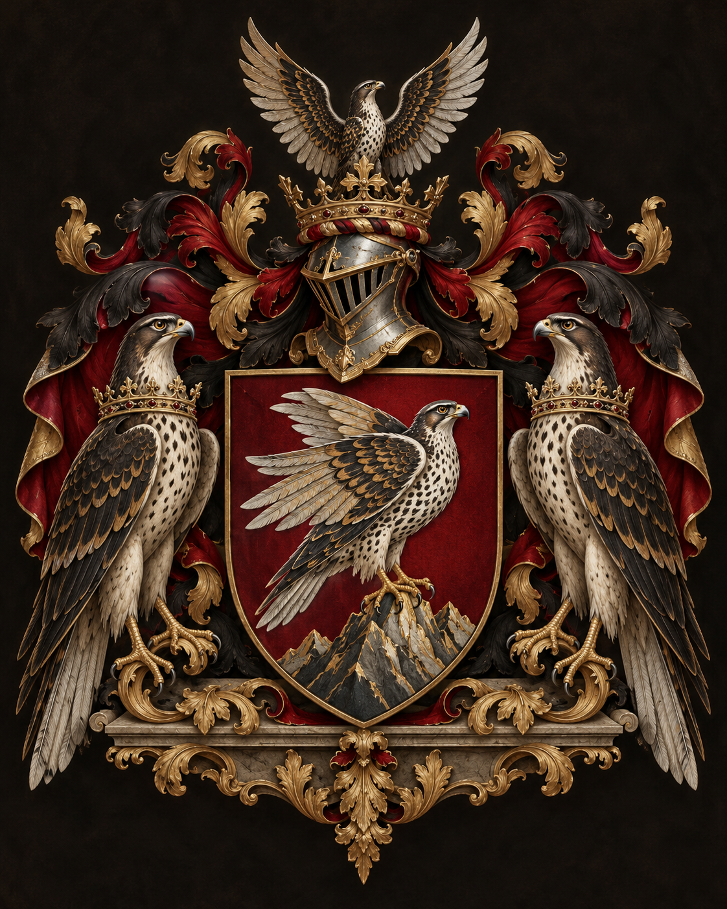

1 Uploaded crest 1

Approved new full heraldry · House identity to confirm
Two newly approved images were uploaded on October 13, 2026. Both are preserved as their original PNGs until their permanent House paths can be assigned without risk of swapping the artwork.
House Wycliffe: Midnight-blue shield with a white cliff, gold tower, silver griffin supporters, and gold tower crest.
House Falkenrath: Burgundy/red shield with a falcon standing on mountains, two falcon supporters and princely helmet-and-falcon crest.
Use the description to match the actual uploaded image number below. No upload-to-House identity has been inferred from the random filenames.

Approved new full heraldry · House identity to confirm

Approved new full heraldry · House identity to confirm
Reply Wycliffe 1, Falkenrath 2 or Wycliffe 2, Falkenrath 1. The two confirmed exact Git blobs will then replace each House's full-heraldry art, both House mastheads and relevant visual canon references. Existing simplified seals will remain unchanged until separately approved.